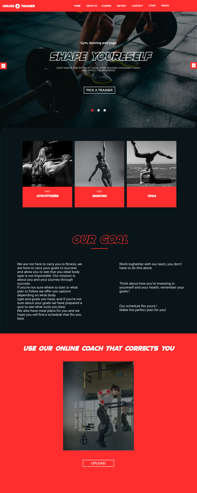
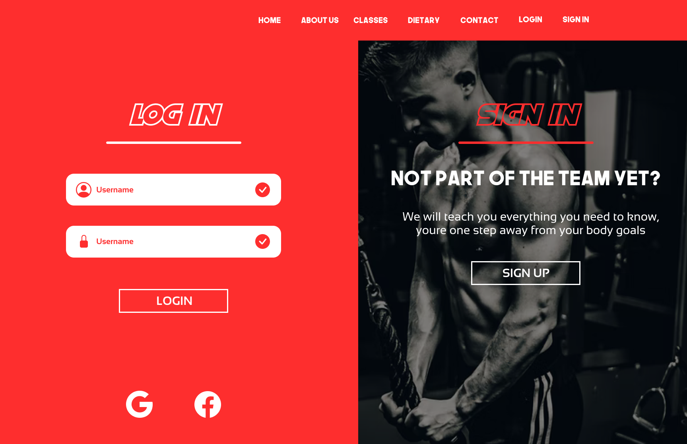
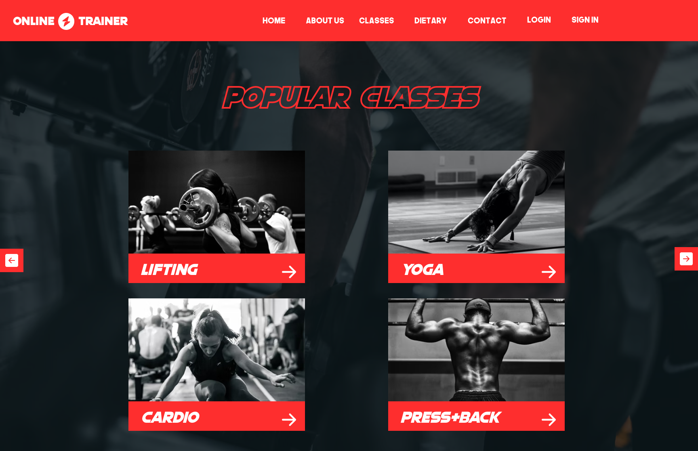
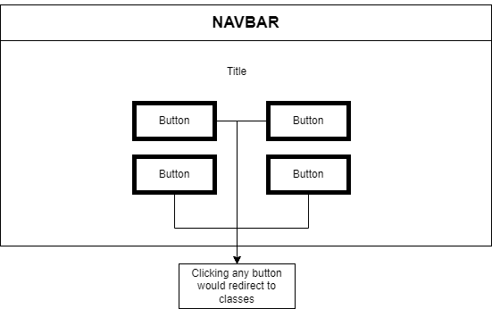

Landing Page
When the client lands on our first page , he experiences the solid shades of red in mix with dark. Likewise, the positive message urges him to look down to track down more data.The principal thing a client sees it's the huge button of the fundamental site with 'Pick a mentor'. Assuming the client is signed in , it would scroll him on the picking the arrangement he needs for preparing the workout(making the scrolling for him) and after he gets diverted onto picking the eating regimen plan.If he isn't logged in , it would redicrect him to the login/register page (he can't acces anything without a membership).Scrolling over the site and introducing him/her everything on the principal page would provide him with the impression of an all around good show.If the client is even more curious , he or she could scroll even more to find our feature of Correction Tool(that helps to correct the form with advanced machine learning techology).

Login Page
When a returning client came on the login , the login structure is introduced on the left and on the off chance that he doesn't have a record he would be diverted to the register page.It is straight forward the login , with a basic ,minimalistic and moderate design so the client isn't overpowered with details.

4.Classes Page
At last , the main piece of the site , it's the classes page. Here the client has a perspective on what a class would resemble and can choose if he is intrigued or not. This is the main part since this part typically frightens individuals off from wellness , so we made it simple to associate and look well disposed to the client.

This would be the drawing functionability of the classes page
